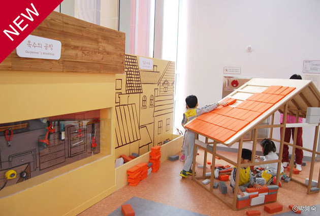
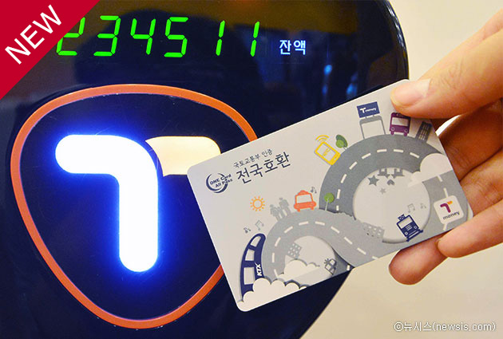
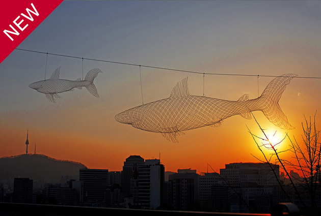

날씨
-
 3.4°
3.4°
- 강수확율: 0% 미세먼지: 43㎍/㎥
3.4°
 상상나라에서 준비한 겨울방학 프로그램! 서울상상나라에서 겨울방학을 맞아 과학, 예술, 인체 분야를 접목한 전시회와 교육 프로그램을 다채롭게 마련했습니다. 보고 만지며 놀다보면 우리 아이의 상상력이 쑥쑥 자라납니다. [내 손안에 서울] │ 2016/03/14
설날, 서울은 축제로 들썩입니다. 이번 설은 유난히 짧다. 부모님이 먼 곳에 있는 사람들에게는 피곤한 연휴가 될 수도 있다. 그래서인지 이번 명절은 서울에서 보내겠다는 이들이 많다. 반대로 부모님이 역귀경한다는 이들도 눈에 띈다. [내 손안에 서울] │ 2016/03/14
 티머니 충전만 해도 2% 돌려받는다. 대중교통 이용금액의 0.2%, 티머니 충전금액의 2%를 T마일리지로 적립해주는 티머니 교통카드 가계부에서 늘 빠지지 않는 지출항목이 있다면 바로 ‘교통비’일 겁니다. 대중교통도 매일 이용하면, 아무리 저렴... [내 손안에 서울] │ 2016/03/14
 달라지는 서울생활’ 미리 챙겨두세요. 2월에는 서울 경제의 허리에 해당하는 소상공인들이 안정적으로 경제활동을 할 수 있도록 과도한 임대료 인상 없이 상가를 장기임대하는 건물주에게 최대 3,000만 원까지 리모델링 비용을 지원하는... [facebook] │ 2016/03/14
다시, 시민이 시장입니다!
서울시민이 즐겨 찾는 100대 통계는? 분야별 주요 통계를 한 곳에 모아 놓은 통계서비스
더보기"This website is created only for the personal portfolio not for commercial uses. Some images and contents found on this website originally came from others."